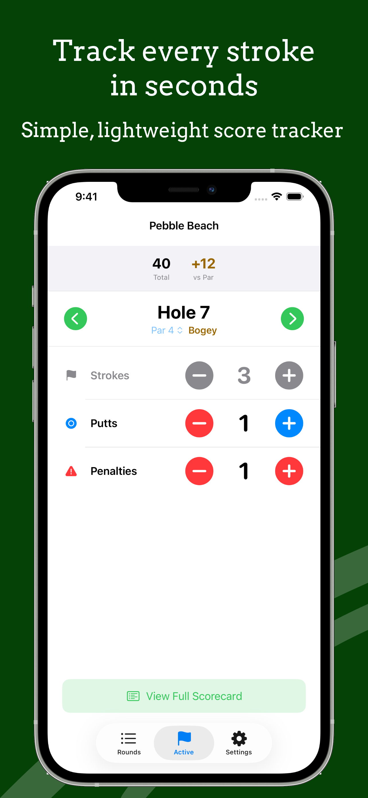
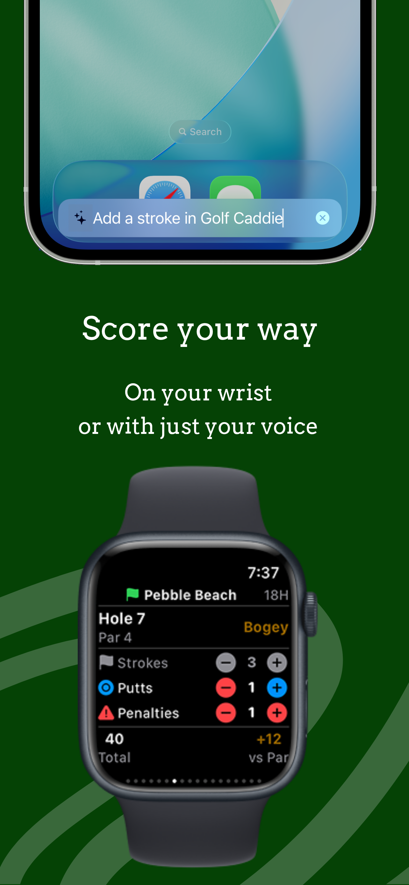
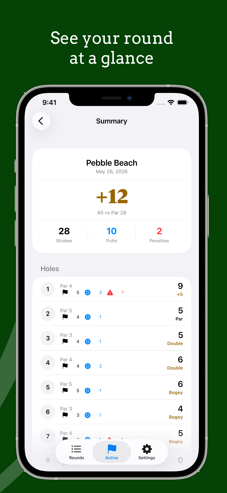
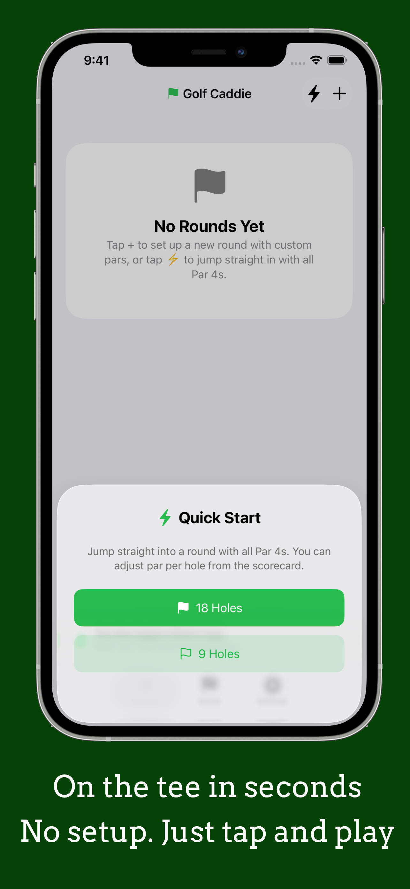
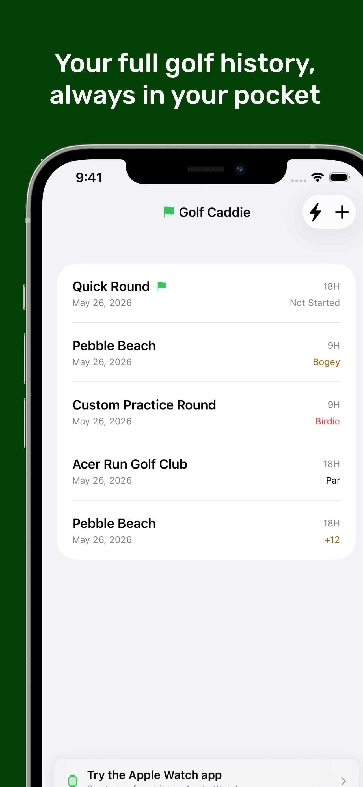
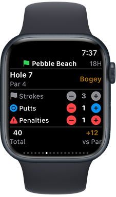
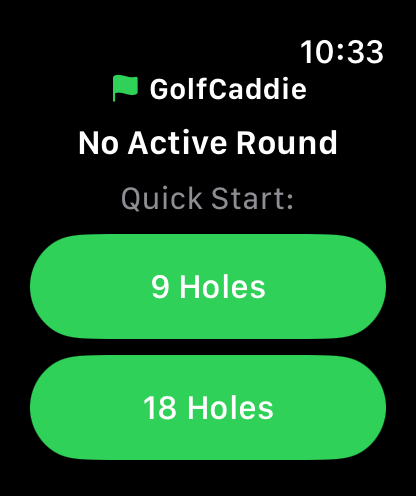

The simplest way to track your golf round on iPhone, Apple Watch, or with just your voice.
No account. No GPS. No social feed. Just open and play.
FREE 14-DAY PRO TRIAL · Apple Watch & Siri for $2.99 one-time · No subscription, ever
No need to take your phone out. Just say it.
Works on iPhone and Apple Watch · Requires active Pro trial or purchase







Have a question, found a bug, or want to suggest something?
Contact Support